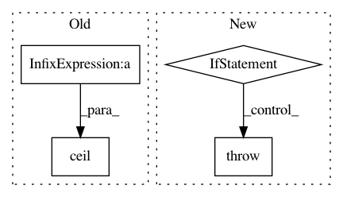

8afa7fb5dc0ef8bb6f2eb98e97d64821624b4e3c,dlpy/speech_utils.py,,segment_audio,#Any#Any#Any#Any#Any#Any#,142
Before Change
// calculate the number of segments to split
nframes_of_total = wave_params.nframes
nframes_of_segment = segment_len * wave_params.framerate
num_of_segments = math.ceil(1.0 * nframes_of_total / nframes_of_segment)
// generate the listing file name
audio_name = os.path.basename(path)
audio_name = os.path.splitext(audio_name)[0]
After Change
else:
raise DLPyError("Cannot find the audio file.")
if segment_len <= 0:
raise DLPyError("Incorrect \"segment_len\" value: the segment length maximum can only be positive.")
if segment_len > 35:
raise DLPyError("Incorrect \"segment_len\" value: the segment length maximum cannot be longer than 35 seconds.")
is_framerate_desired = check_framerate(wave_params, framerate)
In pattern: SUPERPATTERN
Frequency: 3
Non-data size: 4
Instances
Project Name: sassoftware/python-dlpy
Commit Name: 8afa7fb5dc0ef8bb6f2eb98e97d64821624b4e3c
Time: 2019-08-02
Author: Xiaozhuo.Cheng@sas.com
File Name: dlpy/speech_utils.py
Class Name:
Method Name: segment_audio
Project Name: scikit-learn-contrib/DESlib
Commit Name: ec396411be11d514a44a18813278f3a41c73ac5f
Time: 2018-09-23
Author: Natlem@users.noreply.github.com
File Name: deslib/des/des_knn.py
Class Name: DESKNN
Method Name: __init__
Project Name: tensorflow/models
Commit Name: 03b4a0af1b71d98656b0c471939b3e6d0d5e4510
Time: 2019-08-12
Author: hongjunchoi@google.com
File Name: official/recommendation/ncf_input_pipeline.py
Class Name:
Method Name: create_ncf_input_data